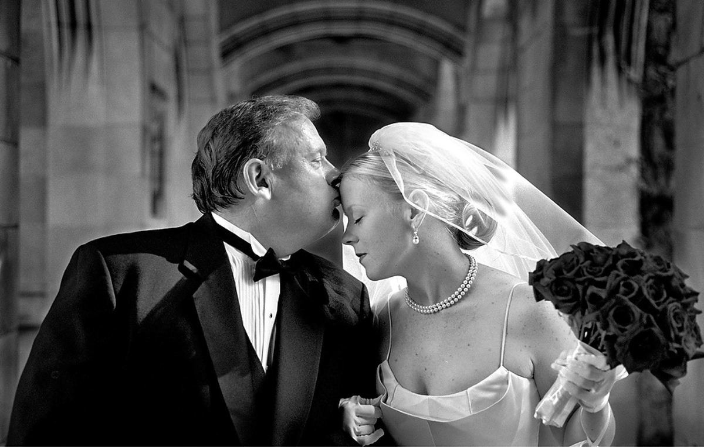
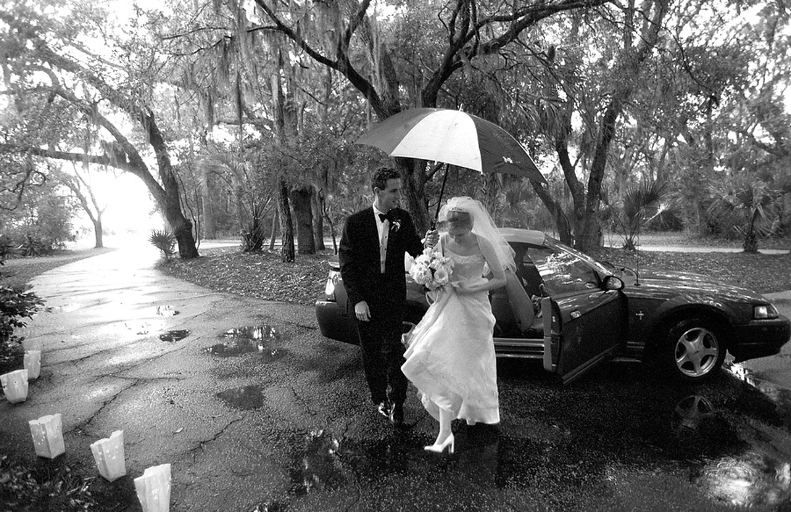

Ocken Photography
Fine art documentary wedding photography in Little Rock.


About
Ocken Photography is a fine art documentary wedding photography studio in Little Rock. The studio covers weddings, engagements, bridals, family and babies, graduates, and pets, with two photographers per wedding per The Knot. The studio is an award winner.
Services
Weddings
Fine art documentary wedding photography, with two photographers per wedding per The Knot.
Portrait sessions
Sessions for engagements, bridals, family and babies, graduates, and pets, from a fine art documentary studio.
Visit
Contact
Ocken Photography serves Little Rock, AR. Questions? Call +1 501-663-1868.